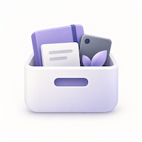

记录个人物品、数量、状态与收纳位置，通过清晰的位置层级和搜索快速找到需要的东西。
清楚记录 · 快速查找 · 本地保存
把物品信息、收纳层级、照片和重要购买资料集中保存在一个清晰的本地清单中。
记录名称、分类、数量、状态、品牌型号、购买与保修信息，并使用封面照片快速辨认。
用家、房间、柜子和抽屉等任意层级组织位置，随时查看物品的完整存放路径。
通过名称、品牌、型号或序列号搜索，使用筛选快速定位，并可创建本地备份及 CSV、PDF 导出。
无需注册账号；物品、位置和封面照片由 App 在设备本地管理。